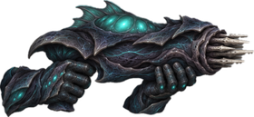

Добро пожаловать в Biopunk for Barotrauma
Биопанк на дне Европы: живой костюм, который питается инопланетной кровью, оружие из плоти и кости, гены таламуса и блокиратора и Гебира, змей из бездны.
Текущая версия мода: 0.0.7 alpha · игра 1.13.5.0


Биокостюм
- +8%
- к скорости, пока костюм сыт
- −30%
- урона: раны, кровотечение, ожоги, яд, радиация
- 7000
- защита от давления, как у УЗК
- ~5 мин
- на флакон крови под водой
- Пока вокруг есть воздух, костюм не тратит кровь
- Под водой или при кислороде ниже 50% дышит за счёт крови
- Без крови костюм сильно сковывает движения и наносит 2 ед. внутреннего урона в корпус каждые 2 секунды. Чтобы остановить урон, вставьте флакон с кровью или снимите костюм.
Рецепты
Материалы
- Генматериал: мозг таламуса в заражённом обломке, всегда
- Стабилоцин: медфабрикатор, магазины
- Странное яйцо: Peanut, Psilotoad, Orangeboy, Balloon; шкафы и магазины
- Останки водолаза: шкафы для хранения и минералов
- Инопланетная кровь: монстры, органы таламуса
- Игольная железа: инвентарь трупа шипостая, примерно каждый пятый
- Гебира: кровь, плавательный пузырь, неизвестный генматериал
| Оружие | Урон | Особенности |
|---|---|---|
| Костошип временно отключено ближний бой |
Пробивает часть брони и ненадолго замедляет цель. Биокостюм ему не нужен. | |
| Жало симбионта временно отключено ближний бой |
В руках носителя сытого биокостюма бьёт в 2,5 раза сильнее (25 / 15) и с каждым ударом перекачивает кровь жертвы во флакон костюма. | |
| Иглострел дальний бой |
Стреляет костяными иглами из игольной железы. С пустой железой молчит. | |
| Игольная железа магазин |
В иглостреле у носителя сытого костюма отращивает по игле каждые 6 с, каждая игла стоит 2 ед. крови из флакона. Пустую можно перерастить в фабрикаторе с инопланетной кровью. |
Жало хаска + органическое волокно + инопланетная кровь → Жало симбионта временно отключено
40 с · Оружие 40
2 шипа шипостая + 2 органических волокна + инопланетная кровь → Иглострел
50 с · Оружие 50
Временно отключено: хват в руках дорабатывается, в версии 0.0.7 предмета нет в игре.
Изогнутый костяной клинок на волокнистой рукояти. Пробивает часть брони, а вязкий секрет на лезвии ненадолго замедляет цель. Симбиоз ему не нужен: костошип одинаково бьёт в любых руках.
2 кальция + 1 органическое волокно + 1 инопланетная кровь → Костошип
30 с · Оружие 35 (рекомендуемый навык)
Уничтожьте мозг таламуса в заражённом обломке и очистите выпавший материал стабилоцином на исследовательском терминале. Вставьте очищенный ген в спайщик генов и наденьте спайщик через окно здоровья.
Враг, которого убил носитель гена, через 8 секунд восстаёт и сражается на его стороне. Через 2–5 минут (чем выше качество гена, тем дольше) такой союзник умирает окончательно: одно и то же существо можно поднять только раз за раунд.
Для воскрешения нужен LuaCs for Barotrauma: на сервере в мультиплеере или в клиенте в одиночной игре.
Попадается при исследовании неопознанного генетического материала на исследовательском терминале, как и обычные гены. Вставьте его в спайщик генов, и во рту носителя вырастет длинный язык с крючьями.
Клавиша атаки (R по умолчанию) выстреливает языком на 10 м. Он пробивает цель насквозь (до трёх частей тела), наносит рваные раны, кровотечение и контузию, оглушает и 2,5 секунды держит её, подтягивая к носителю. Потом язык сматывается обратно. Перезарядка 8 секунд. На голове носителя растёт маленький отросток хаска. LuaCs для этого гена не нужен.
Ванильный гидрокостюм, сросшийся с живой тканью биокостюма: ласты превратились в перепончатые плавники. Баллон не нужен: костюм сам даёт кислород и питается только инопланетной кровью.
- +350%
- к скорости плавания, пока костюм сыт: наравне с ползуном
- +40%
- к тяге скутера, пока костюм сыт
- 6500
- защита от давления сытого костюма (голодного — 5000)
- −15%
- урона: раны, кровотечение, ожоги, яд, радиация
- ~2:45
- на флакон крови под водой; в отсеке с воздухом кровь не тратится
- −20%
- к ходьбе: плавники мешают на суше
Без крови костюм питается носителем: 2 ед. внутреннего урона каждые 2 секунды. Пока костюм сыт, с ним работают Жало симбионта и Иглострел.
Гидрокостюм + основа биокостюма + 2 инопланетной крови → Биогидрокостюм
60 с · Медицина 40
Живой глубоководный экзокостюм, выращенный поверх ванильного: тёмный панцирь, голубые железы, плавники. Вместо топливного стержня в нём бьётся Сердце бездны (около 30 минут на одно), а инопланетная кровь даёт кислород и питает органы-оружие.
- 7500
- защита от давления
- −70%
- физического урона
- ×1,3
- к скорости, пока сердце бьётся; +50% к плаванию
- 10
- карманов для мелких предметов
Без сердца костюм встаёт, без крови начинает питаться носителем: 2 ед. внутреннего урона каждые 2 секунды.

Игольный залп — около 10 костяных игл в секунду.

Кислотный плевок — струя кислоты на ~3 м, разъедает плоть и броню.
Запас залпа и плевка сам отрастает, пока на носителе надет Левиафан с кровью, и стоит около 1 ед. крови в секунду.
Экзокостюм + основа биокостюма + 4 инопланетной крови → Левиафан
Фабрикатор · Медицина 50, Механика 40
3 инопланетной крови + плавательный пузырь + неизвестный генматериал → Сердце бездны
Медфабрикатор · Медицина 40

Длинный змей бездны с плавниками-лентами. Кружит вокруг подлодки, раз за разом бьёт в корпус и утаскивает водолазов, оказавшихся за бортом. Встречается только в бездне, на маршрутах со сложностью от 20.
С туши можно забрать инопланетную кровь, плавательный пузырь и неизвестный генматериал, из которого исследованием можно получить ген блокиратора.
Неудачный эксперимент по выращиванию живого снаряжения: бледный костяной череп и плечи, тёмное ребристое тело, длинные ноги-клинки и шипы вдоль хребта. Выносливее химеры хаска (900 здоровья), но хаском не заражает и с хасками не дружит.
С туши — инопланетная кровь, неизвестный генматериал. В кампании пока не появляется: spawn KramerPrototype cursor.
-
0.0.7 alpha
Биогидрокостюм и рецепты оружия
текущая- ДобавленоБиогидрокостюм: тёмно-синий гидрокостюм из живой ткани. Пока сыт кровью, носитель плавает наравне с ползуном.
- ДобавленоРецепты Жала симбионта и Иглострела в фабрикаторе.
- ДобавленоДобыча с туши Гебиры: кровь, плавательный пузырь и неизвестный генматериал.
- ИзмененоИгольная железа выпадает примерно с каждого пятого шипостая. Каждая выращенная игла стоит 2 ед. крови из флакона костюма.
- ИзмененоСоюзник гена Таламуса живёт от 2 до 5 минут, в зависимости от качества гена.
- ИзмененоЯзык блокиратора пробивает цель, наносит раны, кровотечение и контузию, а на голове носителя растёт отросток хаска.
- ИзмененоЗародыш биокостюма не повреждается извне, а при созревании роняет недопитую кровь.
- ИсправленоГен блокиратора: язык больше не плодит ошибки в консоли, сматывается целиком и исчезает.
- ДобавленоЛевиафан: живой глубоководный экзокостюм на Сердце бездны и крови, со своими органами-оружием: Игольным залпом и Кислотным плевком.
- ДобавленоПрототип Крамера: бледное существо на ногах-клинках, 900 здоровья. Пока вызывается только командой.
- ДобавленоСердце бездны: топливо Левиафана, редкий лут с Гебиры.
- ИзмененоЖало симбионта и Костошип временно отключены, пока дорабатывается их положение в руках.
-
0.0.6 alpha
Новые спрайты оружия
- ИзмененоНовые спрайты иглострела, жала симбионта и костошипа в ванильном стиле.
- ИзмененоНовый флакон гена Таламуса, собранный по образцу ванильных генов.
- ИзмененоХват иглострела подогнан под новый спрайт.
-
0.0.5 alpha
Костошип, гены и Гебира
- ДобавленоКостошип: костяной клинок с рецептом в фабрикаторе.
- ДобавленоГен Таламуса: убитые носителем враги восстают через 8 секунд и 5 минут сражаются на его стороне.
- ДобавленоГебира, змей бездны, и ген блокиратора с цепким языком.
- ДобавленоКитайская и испанская локализации.
- ИзмененоНовые спрайты биокостюма и флакона гена.
- ИзмененоГолодный биокостюм теперь ранит носителя: 2 ед. внутреннего урона каждые 2 секунды.
- ИсправленоСоюзные NPC больше не атакуют восставших существ.
- ИсправленоОшибки LuaCs при воскрешении и выборе целей.
-
0.0.2 – 0.0.4
Служебные обновления
- ИзмененоТри технические перезаливки в Workshop: правки манифеста мода и ссылка на вики в описании. Нового контента нет.
-
0.0.1 alpha
Первая публикация
- ДобавленоБиокостюм и цепочка его выращивания из генетического материала таламуса.
- ДобавленоЖало симбионта, Иглострел и игольная железа.
Консоль открывается клавишей F3. Вместо inventory можно писать cursor, тогда предмет появится под курсором.
spawnitem bioexo inventoryБиокостюмspawnitem bioexo_embryo inventoryЗародыш биокостюмаspawnitem bioexo_suitbase inventoryОснова биокостюмаspawnitem bioexo_thalamusgene inventoryГен Таламусаspawnitem bioexo_bonespike inventoryКостошип — временно отключеноspawnitem bioexo_stinger inventoryЖало симбионта — временно отключеноspawnitem bioexo_needler inventoryИглострелspawnitem bioexo_needlegland inventoryИгольная железаspawnitem bioexo_slip inventoryБиогидрокостюмspawnitem bioexo_leviathan inventoryЛевиафанspawnitem bioexo_abyssheart inventoryСердце бездныspawn KramerPrototype cursorПрототип Крамераspawnitem alienblood inventoryИнопланетная кровьspawnitem genesplicer inventoryСпайщик геновspawn gebira cursorГебираspawn crawler outsideПолзун за бортомspawnitem stabilozine inventoryСтабилоцинspawnitem diversremains inventoryОстанки водолазаspawnitem op_researchterminal cursorИсследовательский терминал (нужно питание)spawnsub Dugong_Wrecked trueЗаражённый обломок с таламусомspawn spineling outsideШипостай за бортомgiveaffliction bioexosymbiosis 2Симбиоз без костюма, для теста оружия